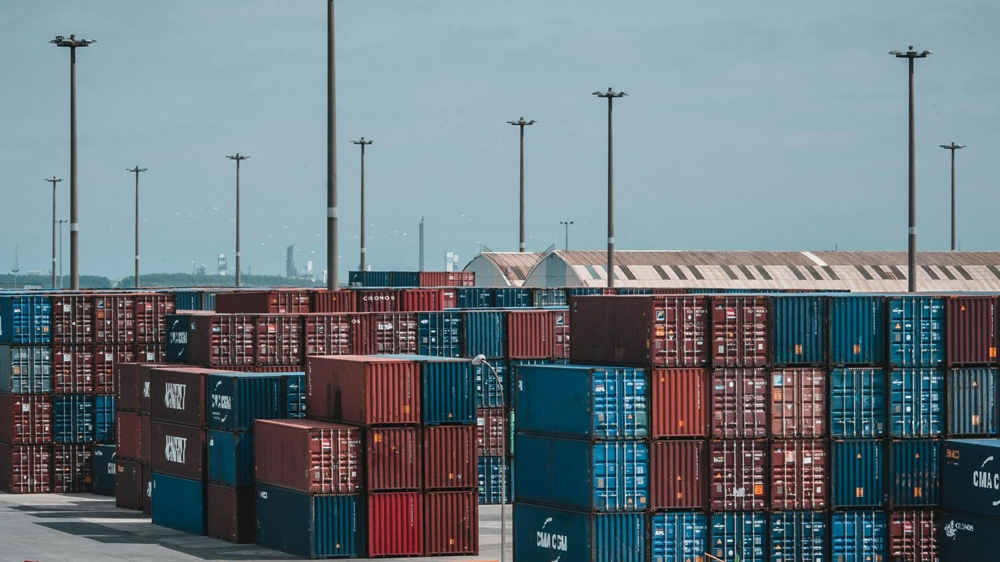

Agricultural Goods
Grains, pulses, oilseeds and their processing products, sourced from established origins and shipped with professional cargo survey and full export documentation.
Learn More
We source, ship and deliver agricultural goods, household items and electronics, and petrol chemicals — sourced from Canada, the United Kingdom, Eastern Europe and Central Asia, and supplied to buyers across the United Kingdom, Europe, Africa, the Middle East and Asia.
Every cargo we handle carries the same commitment: verified quality, complete documentation and a clear line of communication from purchase order to discharge.
Grains, pulses, oilseeds and their processing products, sourced from established origins and shipped with professional cargo survey and full export documentation.
Learn More
Consumer electronics, accessories and everyday household goods — a portfolio built around reliable supply, consistent quality and competitive sourcing.
Learn More
Polymers, solvents, aromatics and base chemicals, handled with the inspection, documentation and compliance discipline that chemical cargo demands.
Learn MoreOpen communication and clear documentation at every stage of the supply chain.
Commodities and services that meet the highest international standards, verified before shipment.
We take full responsibility for our cargo, our service and the commitments we make.
Axis Port LTD is a British trading company registered in England & Wales. Operating from City Road, London, we combine strategic sourcing, reliable logistics and hands-on cargo management in a single service.
Our team works across agricultural trade, quality control and cargo operations, so clients deal with people who understand both the commodity and the shipment behind it.
More About UsTo empower global businesses and communities by providing high-quality commodities, full-service logistics and transparent trade.
To be a globally trusted, multi-sector trading partner — measured by the reliability of every shipment we handle.
We’re here to answer your questions, discuss your requirements, or explore potential partnerships. Reach out to us anytime.
Contact Us